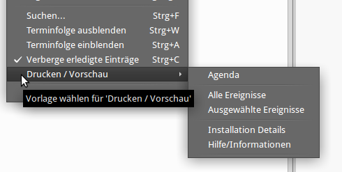
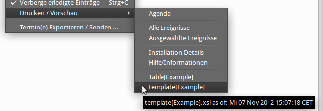

Drucken - Agenda - Vorschau
Drucken - Agenda - Vorschau
Drucken - Agenda - Vorschau
Drucken - Agenda - VorschauDie Druckanforderung wird zunächst als Seite im Browser dargestellt, bzw. auf einer
Tabulatorseite innerhalb von Thunderbird. Von dort läßt sich dann die Seite wie
gewohnt drucken. Der wesentliche Vorteil der neuen Druckfunktionen: das Design des
Ausdruckes kann außerhalb der
Erweiterungssoftware angepasst werden -- dies erfordert einige Kenntnisse von HTML/CSS.
ReminderFox enthält einige Druckvorlagen, die direkt benutzt werden können.
Die Druckfunktion wird mittels des Kontextmenüs auf der Hauptliste mit dem Menüpunkt [Drucken / Vorschau] aufgerufen. Es stehen unmittelbar einige Druckvorlagen zur Verfügung:

(Hinweis: eine Tastensteuerung ist nicht implementiert)
Zusätzlich wurde ein Agenda Druck hinzugefügt. Diese Agenda kombiniert 'Heutige' und 'Kommende' Termine und Aufgaben in einer Liste. Die Agenda wird ebenfalls über das [Drucken / Vorschau] Menü wie das normale Drucken aufgerufen.
Die Agenda kann auch beim Starten der Anwendung in der ReminderFox installiert ist angezeigt werden. Hierzu bei den Einstellungen auf dem Tabulator "Tooltip" aktivieren.

Die ReminderFox Erweiterung beinhaltet einige Vorlagen für das Drucken.
In der Abb. oben sind vier Abschnitte zu sehen:
- Abschnitt 1: Agenda
- Abschnitt 2: ReminderFox Vorlagen mit 'Alle Ereignisse' und 'Ausgewählte Ereignisse'
- Abschnitt 3: 'Installationshinweise' (Ein Überblick über die derzeitige ReminderFox Installation) und 'Hilfe' (ruft diese Dokumentation auf)
- Abschnitt 4: Benutzer Vorlagen mit 'Table[Example]' und 'Template[Example]'
ReminderFox stellt in den Abschnitten 1 .. 3 fertige Vorlagen zur Verfügung. Diese werden ggf. durch neuere ReminderFox Versionen geändert.
Der Benutzer kann Vorlagen hinzufügen bzw. bestehende ändern. Hierfür ist der Abschnitt 4 vorgesehen, in der Abb. sind zwei Benutzervorlagen zu sehen:

Wie diese angepasst werden, ist nachstehend beschrieben.
Ein Drucklayout ist durch eine HTML/CSS Struktur sowie weitere Elemente zum Zugriff auf die zu druckenden Daten definiert. Diese Definitionen sind in einer Datei mit der Endung .XSL gespeichert.
XSL steht für EXtensible Stylesheet Language, es ist eine 'style sheet' Sprache für XML Dokumente. Eine gute Erklärung ist hier: http://www.w3schools.com/xsl/default.asp Ggf. sollte ein spezieller XML Editor wie der XML Copy Editor verwendet werden, der für Windows und Linux verfügbar ist. Von Vorteil: er bietet Syntax Prüfung etc.
ReminderFox stellt zusätzlich zu den Vorlagen "Alle Ereignisse" und "Ausgewählte Ereignisse" weitere vordefinierte Druckvorlagen zur Verfügung.
Hinweis: Diese Vorlagen werden beim ersten Aufruf der Druckfunktion aus dem ReminderFox XPI Verzeichnis in das 'reminderfox' Benutzerverzeichnis übertragen.
Vom Benutzer in das Benutzerverzeichnis hinzugefügte Vorlagen/.XSL Dateien sind direkt im Druckmenü sichtbar, der Tooltiptext der Menüpunkte gibt das Erstellungs-/Änderungsdatum der angewählten Vorlage an.
Druckvorlagen sollten nur im Benutzerverzeichnis auf geänderte Anforderungen angepasst werden; es empfiehlt sich unbedingt vorher eine Sicherungskopie anzulegen.
Der XML/XSLT Druckprozessor ist sehr rigide, bei den meisten Syntax Fehlern wird lediglich ein "schwarzer" Bildschirm entstehen, aber die "Fehlerkonsole" des Browsers gibt gute Hinweise über die Fehler .. oder bei Problemen eine Anfrage über die ReminderFox Supportseite stellen .. so lassen sich ggf. Druckvorlagen ausgetauschen und stehen allen Anwendern zur Verfügung.
Beispiele der erforderlichen Verzeichnisse bei unterschiedlichen Systemen:
ReminderFox Benutzerverzeichnis
Linux /media/DATA/_Mozilla/TB_gW/Profiles/ouh3uj2w.default/reminderfox/
Windows C:\Users\Guenter\AppData\Roaming\Mozilla\Firefox\Profiles\zu3hiox4.default\reminderfox\
ReminderFox XPI Verzeichnis der Druckvorlagen
Linux /media/DATA/_Mozilla/TB_gW/Profiles/ouh3uj2w.default/extensions/{ada4b710-8346-4b82-8199-5de2b400a6ae}/defaults/printing/
Windows C:\Users\Guenter\AppData\Roaming\Mozilla\Firefox\Profiles\zu3hiox4.default\extensions\{ada4b710-8346-4b82-8199-5de2b400a6ae}\defaults\printing\
Welche Datenelemente der auf der Hauptliste gewählten Termine/Aufgaben gedruckt werden können, ist zu sehen in der Datei current.xml die mit jedem Druckvorgang neu erzeugt wird. Die Datei ist gespeichert im ReminderFox XPI Verzeichnis der Druckvorlagen.
Der Aufruf der "Drucken / Vorschau" Funktion erzeugt eine Datei current.xml (siehe vorstehend). Öffnen dieser Datei im Browser zeigt alle verfügbaren Datenelemente. Die Struktur der Datei ist:
| <general> | |||
| <remindertype> | "reminder" | "todos" | ||
| <remindertitle> | lokalisierter Typ | ||
| <date><time> | gibt Datum/Zeit wann der Druck erfolgte / die Datei generiert wurde | ||
| <version> | zeigt die ReminderFox Version | ||
| <template> | Verzeichnis der zum Druck verwendeten .XSL Definition | ||
| <xlsName> | Datei Name der verwendeten .XSL Definition | ||
| <app> | Information über Plattform, Anwendung und Lokalisation | ||
| <reminders> | |||
| <event> | mehrfache Einträge mit Inhalt der gewählten 'Termine' / 'Aufgaben', siehe <remindertype> | ||
| <locale> | Textelemente die auf Beschreibung zum Drucken genutzt werden können (zB. Datum, Priorität, Ort, ...)Die Texte sind lokalisiert entsprechend der aktiven Sprachversion der Anwendung | ||
Die 'Datum' basierenden Elemente der Termine / Aufgaben werden in verschiedene Formate umgesetzt, zB: für das Anfangsdatum ergibt sich:
| Element | Inhalt und Formatierung (definiert durch ReminderFox Einstellungen) |
| <date> | formatiert mit der Einstellung ReminderFox/Einstellungen/Übersichtsanzeige 'Datum und Zeit' |
| <date_time> | formatiert mit [time] |
| <date_shortDay> | 'Wochentag' des Datums formatiert mit [shortDay] |
| <date_ref> | der JS Wert .getTime(), die gibt die Anzahl der Millisekunden seit 01.01.1970 0:00:00 an |
Dem Ausdruck lassen sich Symbole hinzufügen, wie sie auch in der ReminderFox HauptListe verwendet werden.Im Layout "default" sind solche Symbole an verschiedenen Positionen enthalten, zB. in der zweiten Spalte oder am Beginn der Notizen oder vor Links
| Symbol | HTML Notierung |
 |
<img alt="" src="file:icons/alarmbell.png"/> |
 |
<img alt="" src="file:icons/alarmbellSnooze.png"/> |
 |
<img alt="" src="file:icons/ribbon-red-small.png"/> |
 |
<img alt="" src="file:icons/ribbon-blue-small.png"/> |
 |
<img alt="" src="file:icons/notes.png"/> |
 |
<img alt="" src="file:icons/mail.png"/> |
 |
<img alt="" src="file:icons/repeat.png"/> |
 |
<img alt="" src="file:icons/@.png"/> |
 |
<img alt="" src="file:icons/location.png"/> |
Diese Symbole befinden sich in dem Verzeichnis ../Profiles/ == benutzes Profil == /extensions/{ada4b710-8346-4b82-8199-5de2b400a6ae}/defaults/printing/icons
Siehe auch "template[example].xsl" Datei für Details.